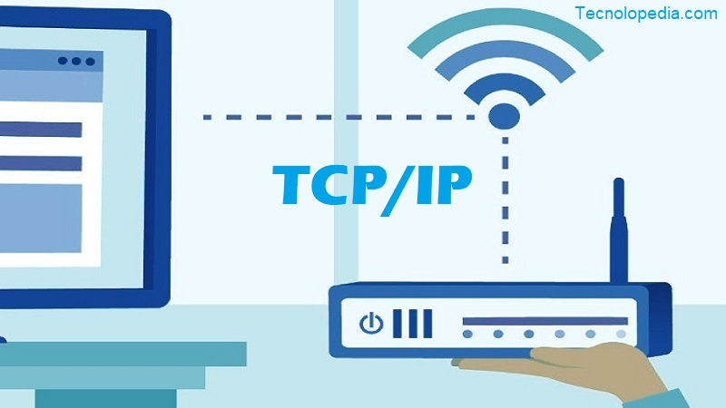

WWW
La World Wide Web —comúnmente conocida como WWW, W3, o la Web— es un sistema interconectado de páginas web públicas accesibles a través de Internet. La Web no es lo mismo que el Internet: la Web es una de las muchas aplicaciones construidas sobre Internet.

INTERNET
utiliza para hacer referencia a una red de computadoras interconectadas entre sí a nivel mundial con el objetivo de hacer común información de acceso público. Esta red utiliza un lenguaje en común para la comunicación entre los dispositivos.
SERVIDOR
equipo informático diseñado con el objetivo de proporcionar servicios, recursos o información a otros dispositivos o usuarios en una red. Actúa como un intermediario, procesando las solicitudes y enviando respuestas a través de la red

CENTRO DE DATOS
ubicación física que almacena máquinas de computación y sus equipos de hardware relacionados. Contiene la infraestructura computación que requieren los sistemas de TI, como servidores, unidades de almacenamiento de datos y equipos de red. Es la instalación física que almacena los datos digitales de cualquier empresa

PAGINA WEB
espacio digital en línea al que se puede acceder a través de internet y que muestra contenido multimedia o interactivo en un navegador web. Se integra con elementos de texto, imágenes, videos y otros recursos, los cuales se almacenan en servidores y que los usuarios pueden solicitarlos desde sus dispositivos.

SITIO WEB
colección de páginas accesibles en Internet donde puedes mostrar información, imágenes, videos y otros elementos para conectar con tus clientes.

IP
dirección única que identifica a un dispositivo en Internet o en una red local. IP significa “protocolo de Internet”, que es el conjunto de reglas que rigen el formato de los datos enviados a través de Internet o la red local
ICANN
organismo de coordinación privado y técnico sin fines de lucro que se encarga de los sistemas de numeración y nombres en Internet.
HTTP
El protocolo de transferencia de hipertexto (HTTP) constituye los cimientos de la red mundial, y se utiliza para cargar páginas web mediante enlaces de hipertexto. HTTP es un protocolo de capa de aplicación diseñado para transferir información entre los dispositivos conectados de la red, y se ejecuta sobre otras capas del conjunto de protocolos de la red. Un flujo típico sobre HTTP implica una máquina cliente que realiza una solicitud a un servidor, que a continuación envía un mensaje de respuesta.
HTML
HTML (Lenguaje de Marcas de Hipertexto, del inglés HyperText Markup Language) es el componente más básico de la Web. Define el significado y la estructura del contenido web. Además de HTML, generalmente se utilizan otras tecnologías para describir la apariencia/presentación de una página web (CSS) o la funcionalidad/comportamiento (JavaScript)

TCP
El Protocolo de control de transmisión (Transmission Control Protocol, TCP) es un estándar de comunicaciones que permite que los programas de aplicaciones y dispositivos informáticos intercambien mensajes a través de una red. Está diseñado para enviar paquetes a través de Internet y garantizar la entrega exitosa de datos y mensajes a través de redes
NAVEGADOR WEB
un programa que permite ver la información que contiene una página web. El navegador interpreta el código, HTML generalmente, en el que está escrita la página web y lo presenta en pantalla permitiendo al usuario interactuar con su contenido y navegar.

Referencia